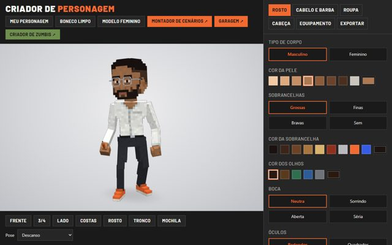
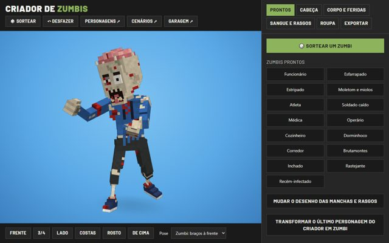
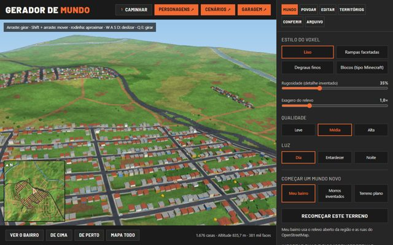
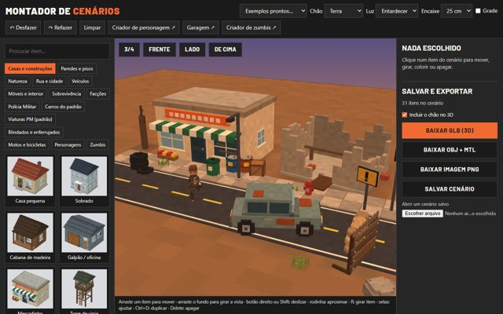
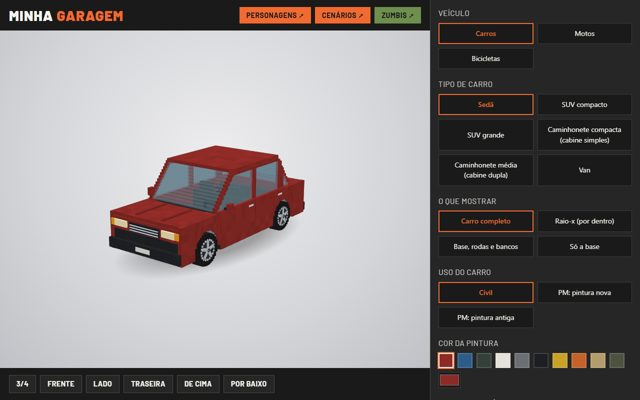

Ferramentas do jogo
Clique no que você quer abrir. Melhor no computador.

Criador de personagemRosto, cabelo, roupas e equipamentos
Criador de zumbisZumbis prontos e sorteio
Gerador de mundo (mapa)Bairro, casas, terreno e territórios
Montador de cenáriosCasas, ruas, móveis e veículos
GaragemCarros, motos e bicicletasO que você criar fica salvo no seu próprio navegador.
Jogo em desenvolvimento. Obra de ficção, sem vínculo com a Polícia Militar nem com outras instituições.
Relevo: SRTM data courtesy of the U.S. Geological Survey. Ruas e rios: © colaboradores do OpenStreetMap (ODbL).